Convexity of empirical risk
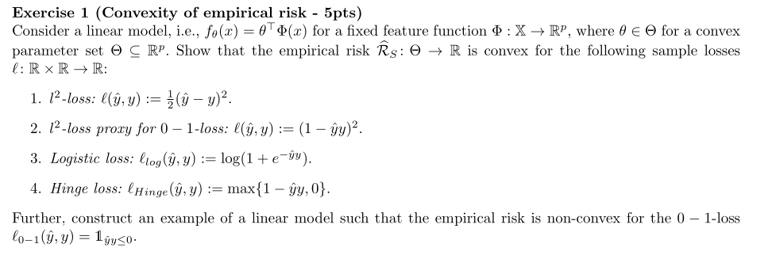
Empirical risk
learning rules:
ERM, SRM, MDL
Empirical risk minimization, Structural risk minimization, Mini‐
mum description length
Fundamental questions of learning
What is learning?
A generalization of Valiant’s Probably Approximately Correct
learning model gives the answer.
Framework: Domain, Label set, Training set S, The learner’s out‐
put (a prediction rule h: X‐>Y, also called a predictor, a hy‐
pothesis, or a classifier), a learning algorithm A, h=A(S), error
of a classifier: the probability that the predictor fails h(x) !=
f(x)
Notation: D(A) determines how likely it is to observe a point x ∈
A, here A is a subset of X and D is the probability distribution
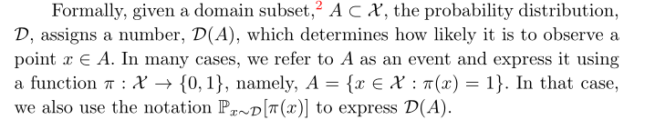
The error of a prediction rule, h:X‐>Y
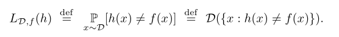
The subscript (D, f) indicates that the error is measured with
respect to the probability distribution D and the correct label‐
ing function f. We omit this subscript when it is clear from the
context.
It has several synonymous names: generalization error, the risk,
or the true error of h. L means the loss of the learner.
For ERM, the goal of the algorithm is to find h that minimizes
‐2‐
the error with respect to the unknown D and f.
But we don’t know the D and f, the true error is also unknown.
What we can do is to minimize the training error, not the gener‐
alization error, and hope by doing this, also minimizes the gen‐
eralization error. The training error is also called empirical
error or empirical risk.
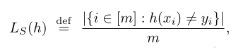
Therefore, ERM is to minimize:
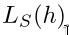
overfitting: perhaps like the everyday experience that a person
who provides a perfect detailed explanation for each of his sin‐
gle actions may raise suspicion.
How to rectify it?
Common solution: apply ERM learning rule over a restricted search
space. That is, ERM with inductive bias. The learner should
choose in advance (before seeing the data) a set of predictors.
This set is called a hypothesis class and is denoted by H. ERM
chooses from H a h such that gives the minimum loss:
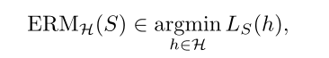
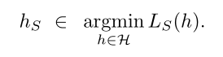
The method of introducing an inductive bias sounds promising. But
how come it enforces non‐overfitting?
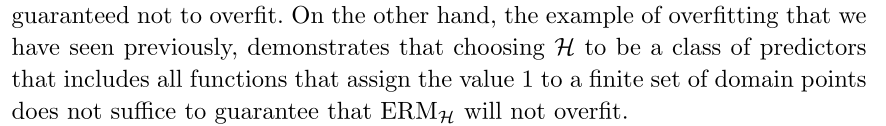
A fundamental question in learning theory is, over which hypothe‐
sis classes ERM learning will not result in overfitting.
Intuitively, choosing a more restricted hypothesis class better
protects us against overfitting but at the same time might cause
us a stronger inductive bias.
Now we learn about H. How do we decide the size of H?
Why?: If H is a finite class the ERM will not overfit, provided
it is based on a sufficiently large training sample (this size
requirement will depend on the size of H).
The realizability assumption: the target function is within H.
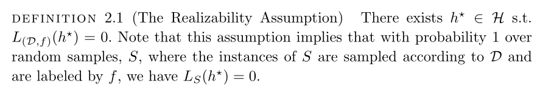
‐3‐
We are discussing about overfitting, but why do we introduce the
realizability assumption?
Relationship between S and D: the i.i.d. assumption.
Intuitively, the training set S is a window through which the
learner gets partial information about the distribution D over
the world and the labeling function, f.
Since L(h) depends on the training set, S, and that training set
is picked by a random process, there is randomness in the choice
of the predictor h and, consequently, in the risk L(h). Formally,
we say that it is a random variable.
It is not realistic toe expect that with full certainty S will
suffice to direct the learner toward a good classifer (from the
point of view of D), as there is always some probability that the
sampled training data happens to be very nonrepresentative of the
underlying D.
We will therefore address the probability to sample a training
set for which
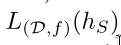
is not too large.
Usually, we denote the probability of getting a nonorepresenta‐
tive sample by δ, and call (1‐δ) the confidence parameter of our
prediction.
By nonrepresentative sample, what do we exactly mean?
How bad is a sample when we say it is nonrepresentative? We need
another parameter: the accuracy parameter.
Since we cannot guarantee perfect label prediction, we introduce
another parameter for the quality of prediction, the accuracy pa‐
rameter, commonly denoted by
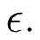
h=A(S), L_D(H_S) is the loss. The probability of fail for the
generalized prediction. However, this probability is unknown to
us, because D and f are unknown to us. In spite of that, we still
compare it to the accuracy parameter, because we want to evaluate
the quality of our classifier. Let’s say the following event hap‐
pens:
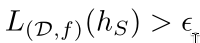
What is the probability of that? If the probability is low, then
we still accept that we have trained a good classifier.
‐4‐
Intuitively, the larger the sample, the better chance we will
train a better classifier. But how large and what chance?
We have a learner algorithm, given S, outputs an h. We don’t know
about D and f, but suppose there is God who knows these, and he
computes L(h) for us. We want L(h) to be lower than the accuracy
parameter. But this is out of our control. Now, suppose our
learner algorithm is fixed, and we know about D and f, we can
compute L(h) by ourselves. We also set the goal with the accuracy
parameter. The only changing variable is the sample.
What is the probability that the sample will lead to failure of
the learner? We are interested in upper bounding this probabil‐
ity. Also, we choose the size of sample to be fixed to m.
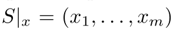
We would like to upper bound
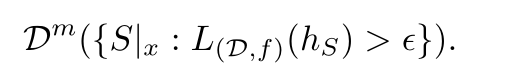
Bad hypotheses:
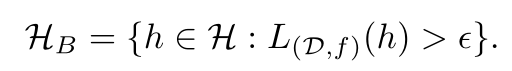
Misleading samples:
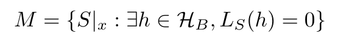
Namely, for every misleading sample, there is a "bad" hypothesis
that looks like a "good" hypothesis.
We would like to bound the probability of the event
But, since the realizability assumption implies that
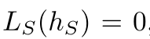
It follows that the event
can only happen if for some bad hypothesis h we have L_S(h) = 0.
In other words, this event will only happen if our sample is in
the set of misleading samples, M.
Many students. One never loses any point in any exam. We want to
find this student out of the group of students. Many exams. Some
easy, some difficult. We choose an easy one, then many students
perform well. This easy exam is a misleading sample. A moderate
‐5‐
student could make full score in the exam. The possibility of
mistaking a moderate student as the best one is high.
However, if the exam is difficult, and only the best student
could make full score, then such an exam is not misleading.
If there is only one student in the group, and he is the best
student never loses points in any exam. Then it won’t matter what
sample we choose.
Therefore the size of the hypothesis class matters.
The mistake happens if the sample is in the set of misleading
samples.
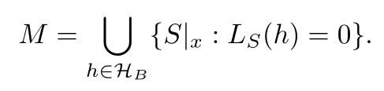
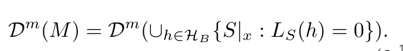
Samples that guide our learner algorithm to output a hypothesis
that fails, that is,
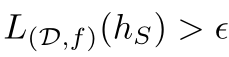
belong to the set of misleading samples.
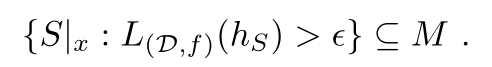
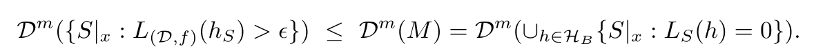
Fail upper bound, with union bound:
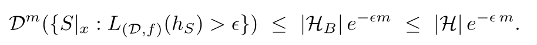
Dˆm is a joint probability distribution. ({}), this specifies the
event. Dˆm({}) is the probability of such an event.
Fix a bad hypothesis:
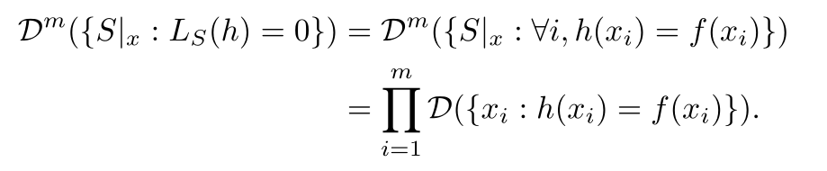
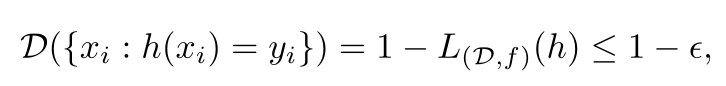
‐6‐
A well‐known inequality:
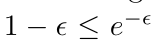
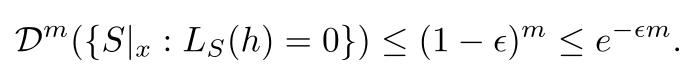
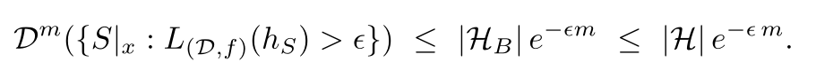
We don’t know the number of bad hypotheses, but it must be lower
than |H|.
For each of the bad hypotheses, their loss is larger than the ac‐
curacy parameter. With such accuracy parameter, in order to
choose a sample to mislead our learner to pick this bad hypothe‐
sis, we must carefully choose from the distribution. But we don’t
construct a sample. So for large accuracy parameter, the proba‐
bility of receiving a misleading sample is low.
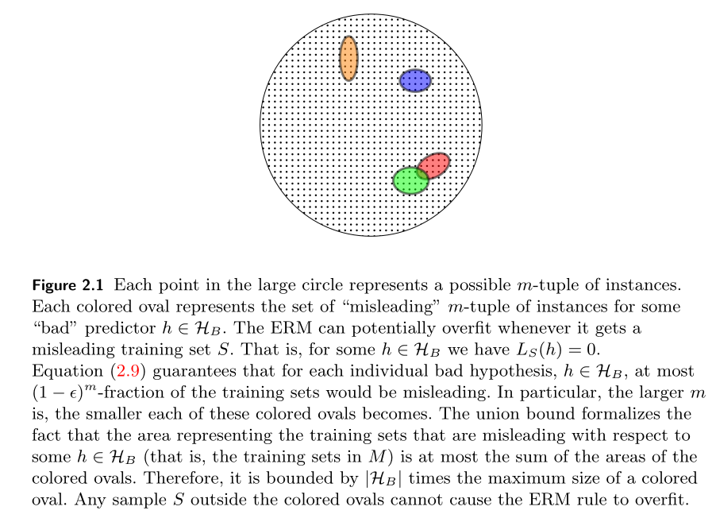
For a sufficiently large m, the ERM rule over a finite hypothesis
class will be probably approximately correct:
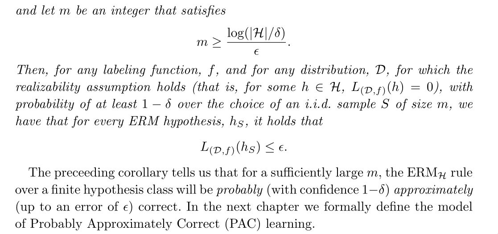
Reasoning:
The probability of receiving a nonrepresentative sample is less
than right‐side. Then the probability of receiving a representa‐
tive sample is greather than (1 ‐ rightside). (1‐rightside) is
monotonically increasing, therefore, the greater m, the higher
the probability that we receive a representative sample. Then we
choose m as:
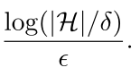
We get the probability of 1 ‐ δ. If m is larger, the probability
will be higher than 1 ‐ δ.
PAC learnability
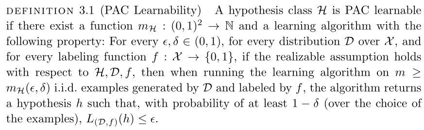
‐7‐
Since the training set is randomly generated, there may always be
a small chance that it will happen to be noninformative (for ex‐
ample, there is always some chance that the training set will
contain only one domain point, sampled over and over again).
Even if we get a training sample that is informative, because it
is finite, there will always be some details that it fails to
capture. Our accuracy parameter, allows "forgiving" the learner’s
classifier for making minor errors.
Sample complexity: the number of examples required to guarantee a
probably approximately correct solution.
There are infinite classes that are learnable as well.
What determines the PAC learnability of a class is not its
finiteness but rather a combinatorial measure: VC dimension.
Learning problems beyond binary classification
By allowing a variety of loss functions, we can do regres‐
sion, multiclass classification.
Agnostic PAC learning
The realizability assumption is waived.
Various learning algorithms
The general learning principle behind the algorithms.